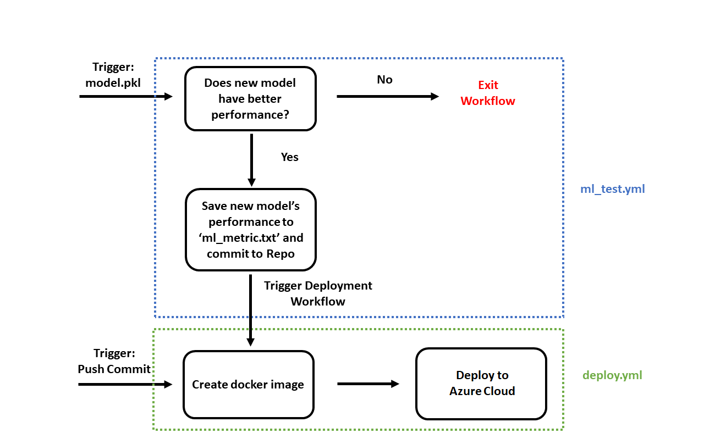

MLOps: End-to-end CI/CD Pipeline For Machine Learning Models Using Github Actions, Docker and Azure Cloud Deployment Services

Introduction
There are many tools available for creating and managing CI/CD pipelines. One of those that is gaining popularity recently is Github Actions. Being an integrated part of the frequently used Github repository, Github Actions is easy to set up and use along with its YAML workflow file. In this project, I build a simple MLOps pipeline to try out the functionality of Github Actions.
Example Scenario
The following toy example scenario is used:
A bike rental company would like to deploy a web application that allows user to rent bikes at rates that vary on the depending on the demand. The bike rental demand is determined by a machine learning model that takes in historical data. The company would like to
- Deploy the web application as soon as possible
- Keep the web app deployed continuously
- Make improvements to the machine learning model throughout the deployment cycle
Simple MLOps Pipeline
The pipeline is split into 2 separate sections. First is a simple CI/CD pipeline (in green) that is triggered by a push commit. Note that CI/CD pipelines are usually more elaborate than this and include merge triggers and testing before deploying to a production environment. The second is a MLOps pipeline (in blue) that is triggered when a new model (.pkl file) is pushed to the repository. The pipeline conducts a simple test on some test data to ensure improved model performance before triggering the first pipeline to deploy with the latest model. Again, this is just a simple MLOps pipeline to try out Github Actions. Actual MLOps pipeline will include other components such as collaboration platform for data scientists, data warehouse and proper tracking of models and hyperparameters.
Components Involved
Github Actions Workflow Pipeline Files
In Github Actions, workflow pipelines are defined in .yml files:
- deploy.yml - YAML file to specify deployment workflow
- ml_test.yml YAML file to specify machine learning model testing workflow
Workflow pipelines for different purposes can be defined in individual .yml files. Github Actions also has the functionality to trigger and run another workflow from within a pipeline run. This will be useful in integrating individual MLOps and DevOps specific workflows.
Files For Web Application
- index.html, confirmation.html - Simple user interface pages
- app.py - Python Flask backend
- model.pkl - Trained machine learning model
These are the files that make up a simple web application for the example use case scenario. It consists of a couple of simple .html files as fontend user interface, a .py file for the Python Flask backend, and a .pkl machine learning model pickle file.
Files For Testing New Model
- test.py - Python script for testing the model
- data.csv - Test data
- ml_metric.txt - Simple text file to store the current best model's performance score
As part of the MLOps testing workflow, these files will enable model performance testing via Python using some test data. The best performing model scores are stored in a .txt file to be used as model performance comparsion in future workflow runs.
Docker
Included in the respository is a docker file, which is a simple text file that contains the blueprint for creating a docker image. This will enable the web application to be deployed as a container.
Azure App Service / Azure Container Instances
For deployment of the web application, the cloud service provider used in this project is Azure. For containerized web application deployment, the following two services from Azure can be used:
- Azure App Service - A service that enables building, deploying and scaling of web applications, mobile applications and APIs with a suite of infrastructure management capabilities and security features.
- Azure Container Instances - Allows quick and simple hosting of all sorts of containers and not just web applications, without having to provision or manage any virtual machine or server infrastructure.
For the deployment of this toy example web application, the more lightweight Azure Container Instances will be used to deploy the container.
Conclusion
In this project, I managed to learn the basics functionalities that Github actions offer and created a couple of workflow that simulates a simple MLOps pipeline. There are still more functionalities in Github Actions to explore and I will look to build a more comprehensive MLOps/DevOps workflow with it in the future.